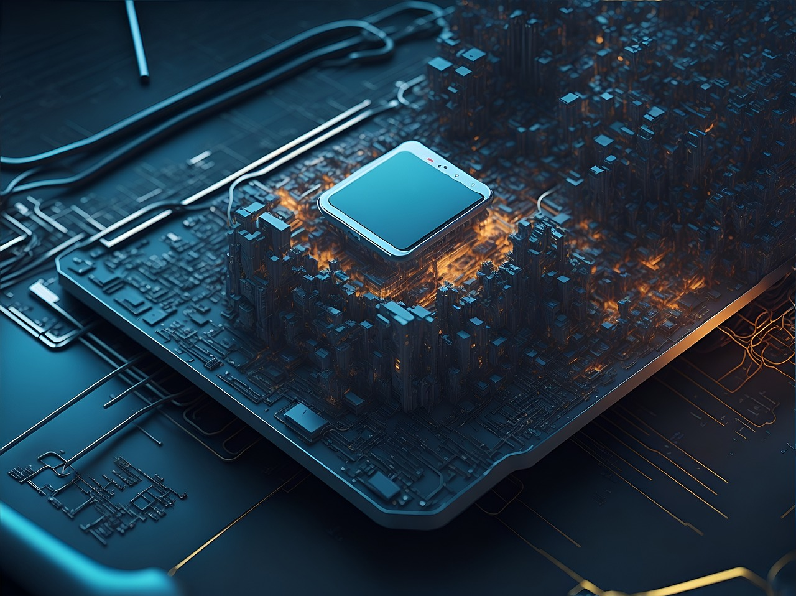
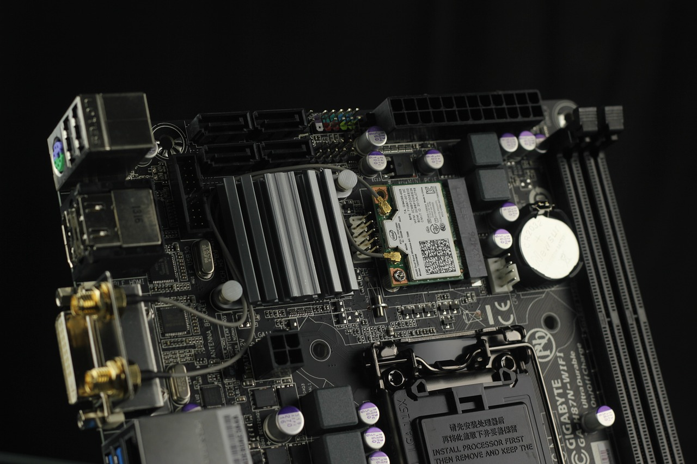
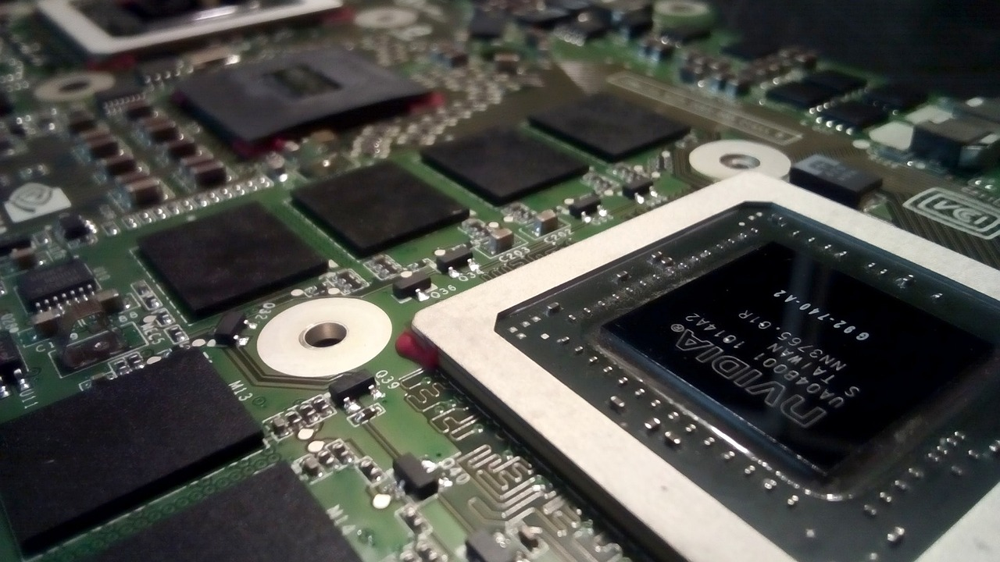

Learning about computers and trying to understand how they work, trying to figure out which ones are better for certain jobs as always been an intrest of mine ever since I got into tech. intrigeued by the idea of consumer computers vs the supercomputers that I power the world, I dove into the rabbit hole further. I will explain what makes a consumer computer and some brief information about servers.Let's start off with the motherboard, the motherboard acts as a foundation upon which other components are installed, and it houses key connectors and sockets that enable data transfer and power distribution. It includes a chipset, which manages data flow between different components, and BIOS (Basic Input/Output System) firmware, which provides low-level control and initialization of the hardware during the boot process. Motherboards come in different sizes and form factors, such as ATX, microATX, and Mini-ITX, and their layout and features can vary based on the intended use and compatibility with specific processors and hardware configurations. Upgrading or customizing a computer often involves selecting a motherboard that supports the desired components and offers the necessary expansion options for future upgrades. In summary, the motherboard acts as the backbone of a computer system, facilitating communication and coordination between its various components.
What components are installed on the motherboard? CPU, RAM, GPU, and storage devices are whats mostly needed for a consumer pc.
The CPU

The CPU (Central Processing Unit), often referred to as the "brain" of the computer, is a vital component responsible for executing instructions and performing calculations in a computer system. Its primary function is to carry out the core operations required to run software programs and process data. The CPU performs three key tasks: fetch, decode, and execute. First, it retrieves instructions from the computer's memory, known as the instruction fetch. Then, it decodes these instructions to understand what operations need to be performed. Finally, the CPU executes the instructions by performing the necessary calculations or data manipulations. The CPU consists of multiple cores, each capable of executing instructions independently. This feature enables the CPU to handle multiple tasks simultaneously through a technique called multi-threading or multi-core processing. The CPU's clock speed, measured in gigahertz (GHz), determines how many instructions it can execute per second. A higher clock speed generally results in faster processing. In addition to executing program instructions, the CPU also manages and coordinates the activities of other hardware components in the computer system. It communicates with devices such as the memory, storage drives, graphics card, and input/output peripherals to ensure data transfer, synchronization, and overall system performance. Overall, the CPU plays a critical role in executing instructions, performing calculations, and managing the operations of a computer system, making it an essential component for efficient and effective computing.RAM
RAM (Random Access Memory) is a type of computer memory that is used for temporary data storage and quick access by the CPU. It serves as a high-speed workspace where the computer can store and retrieve data that is actively being used. Unlike permanent storage devices such as hard drives or solid-state drives, RAM is volatile memory, which means that its contents are lost when the computer is powered off or restarted. However, RAM provides much faster access times compared to permanent storage, allowing the CPU to quickly read and write data during program execution. RAM is organized into small cells, each capable of storing a single piece of data. These cells are arranged in a matrix of rows and columns, with each cell having a unique address. When the CPU needs to access data, it specifies the address of the desired cell, and the RAM retrieves the data and provides it to the CPU. The capacity of RAM is measured in gigabytes (GB) or terabytes (TB). A higher RAM capacity allows a computer to handle more data simultaneously, which can improve overall system performance, especially when running multiple programs or demanding tasks such as gaming or video editing. RAM plays a crucial role in the computer's performance because it directly affects how quickly and efficiently programs can run. Insufficient RAM can lead to slower system performance, as the computer may need to rely on slower storage devices for data retrieval. On the other hand, having an adequate amount of RAM allows for smoother multitasking, faster program loading times, and improved overall responsiveness. In summary, RAM is a temporary storage space that provides fast access to data for the CPU. It is an essential component in a computer system, enabling efficient data processing and enhancing overall performance.
GPU

A GPU (Graphics Processing Unit) is a specialized electronic circuit or chip that is designed to rapidly render and manipulate computer graphics and images. It is dedicated to performing calculations and processing tasks related to graphics rendering, video playback, and visual effects. A GPU consists of multiple cores, or shader units, which work in parallel to execute calculations and process data. These cores are specifically designed to handle mathematical operations required for rendering and manipulating images, such as geometry transformations, texture mapping, lighting calculations, and pixel shading. The primary advantage of a GPU is its ability to perform massive parallel computations, where multiple calculations are carried out simultaneously. This parallelism allows the GPU to process a large number of pixels or vertices in graphics-intensive applications, resulting in fast and smooth rendering of images, animations, and visual effects. In addition to graphics-related tasks, modern GPUs are increasingly being utilized for general-purpose computing through technologies like CUDA (Compute Unified Device Architecture) or OpenCL (Open Computing Language). These frameworks allow programmers to leverage the parallel processing power of GPUs for non-graphical computations, such as data analysis, machine learning, and scientific simulations. Overall, GPUs play a critical role in accelerating graphics processing and enabling immersive visual experiences. Their parallel processing capabilities make them essential for demanding graphical tasks and computationally intensive applications, significantly enhancing the performance and realism of computer-generated imagery.Storage Devices
Storage devices for computers are hardware components used to store and retrieve digital data over the long term. They provide the ability to store and access files, documents, operating systems, applications, and other data on a computer system. There are several types of storage devices commonly used in computers:
- Hard Disk Drives (HDD): HDDs are traditional mechanical storage devices that use spinning platters and magnetic heads to read and write data. They offer large storage capacities at relatively affordable prices, making them suitable for storing a vast amount of data.
-
Solid-State Drives (SSD): SSDs are newer storage devices that use flash memory technology to store data. They have no moving parts and provide significantly faster data access and transfer speeds compared to HDDs. SSDs are more expensive per unit of storage but offer improved performance and reliability, making them popular for operating system installations and frequently accessed programs. -
Hybrid Drives: Hybrid drives combine the advantages of both HDDs and SSDs. They feature a traditional HDD with a smaller amount of built-in SSD storage. Frequently accessed data is stored on the SSD portion for faster retrieval, while less frequently used data is stored on the larger HDD section. -
Optical Drives: Optical drives, such as CD, DVD, and Blu-ray drives, use lasers to read and write data on optical discs. While their usage has declined with the rise of digital distribution and cloud storage, they are still used for tasks such as playing movies, installing software, or creating backup discs.
These are just a few examples of storage devices commonly used in computers. Each type of storage device has its own advantages and is suitable for specific use cases, depending on factors like capacity requirements, performance needs, and budget considerations.